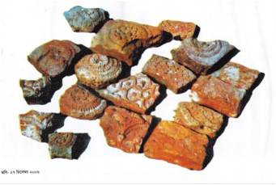

পাক-ভারত উপমহাদেশের প্রথম গির্জা। ১৬০০ খ্রিস্টাব্দের ১ জানুয়ারি রাজা প্রতাপাদিত্য এ গির্জাটি উদ্বোধন করেন।
যশোহর রাজ্যে মন্দিরের পাশাপাশি মসজিদ ও গির্জা প্রতিষ্ঠিত হয়েছিল প্রতাপাদিত্যের পৃষ্ঠপোষকতায়। তাঁর সেনাবাহিনীতে হিন্দু মুসলমান খ্রিস্টান ধর্মের সহাবস্থান ছিল।
বিলুপ্ত হয়ে যাওয়া গির্জার গায়ে পোড়ামাটির টেরাকাটা নকশা ছিল। সেই টেরাকাটা নকশার কয়েকটি ছবি এখানে। এগুলো নতুন প্রতিষ্ঠিত গির্জায় সংরক্ষিত আছে।